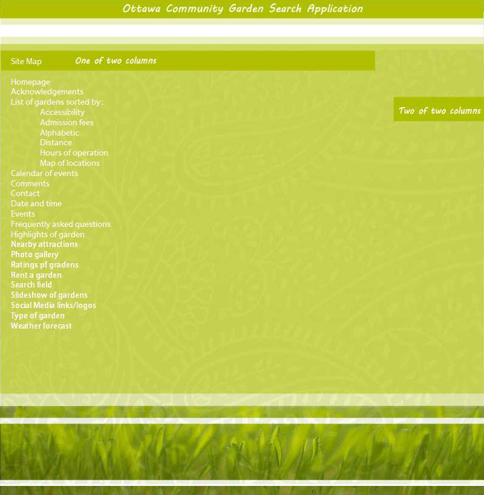
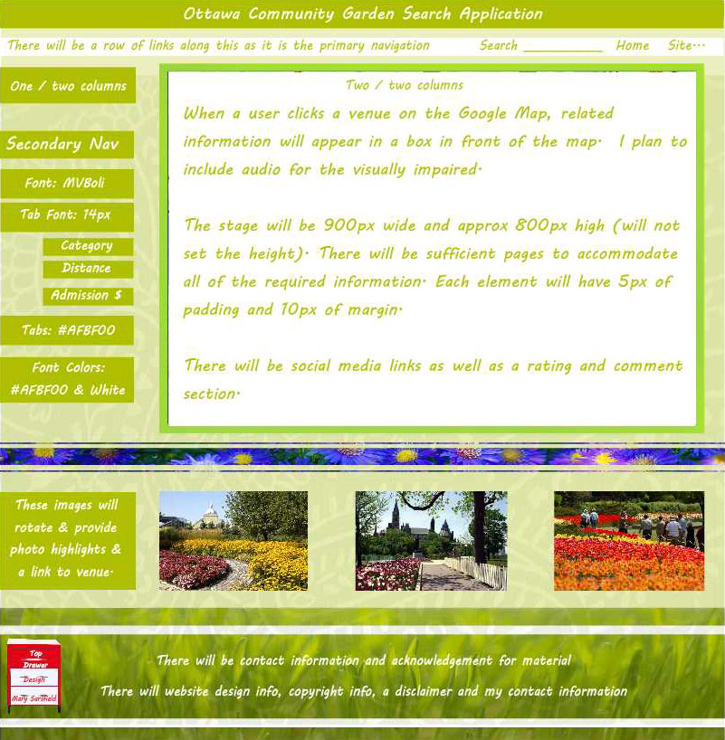
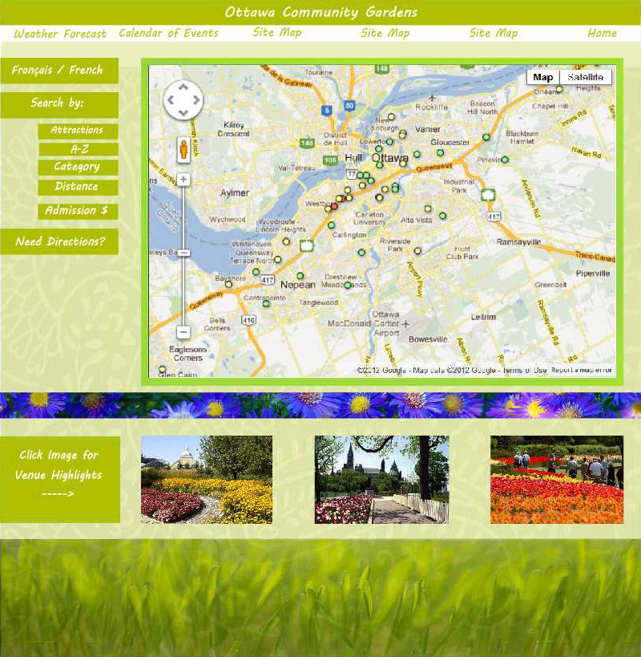

Mary Sarsfield's Garden Finder Application
1 - Description & Feature
For my database project (open-data-app), I have chosen to use the list of Community Gardens.
My perception is, that although people of all ages might enjoy a nice walk through a beautiful garden, or have their wedding photos taken in one, I tend to think of actual gardening as predominantly an adult person's hobby.
For that reason, I am designing application's look and feel towards adult users and will make it a simple layout with easy to read fields and text.
The site will be dynamic in that in the sense that users will be able to click on a map to show their current location, then, find gardens by garden type (trees, roses, tulips...), garden name alphabetically, rating, distance, proximity to other points of interest (bird sanctuaries, waterways, videos, swans...) and locations. Most of this information will be extrapolated from the City of Ottawa's database of gardens, then be displayed on Google Maps.
I will use earth tones and some vibrant coloured floral images with a green image background and have clicked fields appear to grow into a flower/tree.
Also included:
- Accessibility
- Admission fees
- Alphabetic
- Calendar of upcoming horticultural events
- Comments
- Contact
- Daily weather forecast
- Date and time
- Distance
- Events
- Frequently asked questions
- Highlights
- Hours of operation
- Mapped locations
- Nearby at tractions
- Ratings
- Rent a venue
- Search
- Slideshow
- Social Media
- Type
- Weather forecast
2 - Link to Github Repository
Please find here the hyperlink to my open-data-application.
https://github.com/msarsfield/open-data-app
3 - Link to PHPFog project
Please find here the hyperlink to my phpfog database.
http://mary-php-data.phpfogapp.com/
4 - Link to City of Ottawa Data Set
Please find here the hyperlink to the City of Ottawa open data source for my chosen topic.
http://ottawa.ca/online_services/opendata/info/community_gardens_en.html
5 - User Persona
This is a brief description of an avid user.
Daisy Fern is 38 year old mid-level legal aid worker, who although is too young to have "lived it", is described by her friends and family as a flower child.
When at home in her garden, Daisy wears a comfy pair of Lee Valley Garden Shoes, a cooling Lee Valley gel neckerchief, big sun glasses, a mosquito net, UV/SPF 70 sun screen (lemon scented).
When Daisy is out & about, her look is casual, but when she takes visitors to visit Ottawa's points of interest (especially lovely gardens), she wears long cotton flora skirts and dresses and carries a parasol in the shape of a sunflower.
Daisy belongs to the Ontario Horticultural Society, The Canadian Wildlife Association and Greenpeace. Daisy always picks up after her dogs with bags that practically bio-degrade on the way home. She is an avid re-cyler and would someday like to live "off-the-grid" in a solar powered house. Until then, she is happy to pay extra for energy efficient light bulbs. In her spare time, Daisy takes a Japanese flower arranging course and donates the arrangements to a seniors residence.
On Saturdays, Daisy volunteers at the Experimental Farm working alternately in the rose garden and in the arboretum.
In conclusion, Daisy believes that everyone should stop and smell the roses and would benefit from meditating. She can think of no better place than one of our many wonderful community gardens.
6 - Sitemap
There will be a link to a sitemap in one place on the front page. The sitemap will include links for all of the available record searches (to find gardens by name alphabetically, rating, distance and locations) as well as contact and direction information and any possible entrance fees (see below).All of the tab headings will be bold and I will play with contrast until it is easy to read.
7 - Wireframe
8 - Design Mockup
Thank you for your consideration and I look forward to your suggestions and to building it.